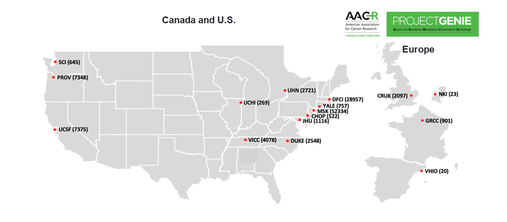
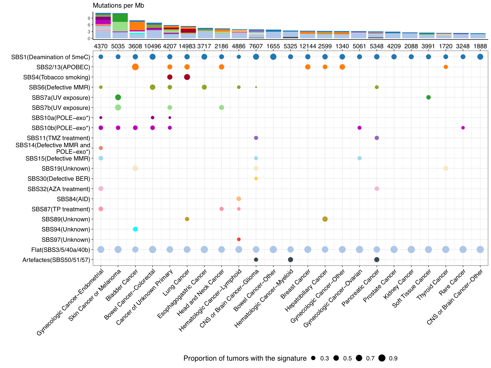
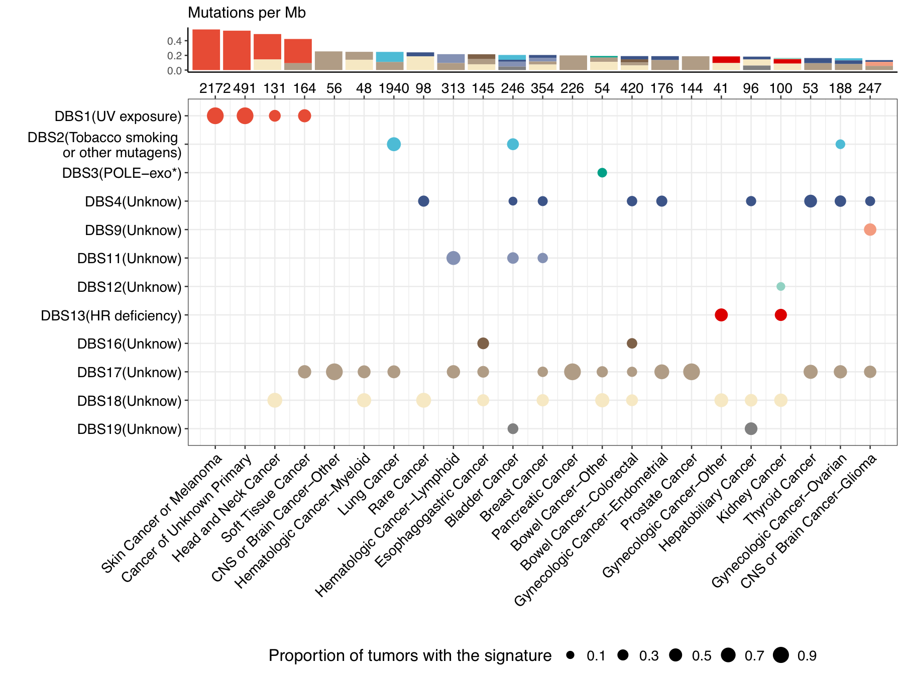

version1.0.8 R>=4.1.0 licenseCC BY-NC 4.0 teststestthat
National Cancer Institute (NCI) Web Tools: Interactive targeted-sequencing signature catalogue | Online signature refitting tool
Signature Analyzer for Targeted Sequencing (SATS) is a panel-aware framework for mutational signature analysis in targeted sequencing data. Unlike tools developed primarily for whole-exome sequencing (WES) or whole-genome sequencing (WGS), SATS models panel-specific sequence context and mutation opportunity, enabling de novo signature extraction, mapping to tumor mutational burden (TMB)-normalized reference signatures, individual-tumor signature refitting and calculation of signature-attributed mutation burdens.
The accompanying manuscript applies SATS to 111,711 tumors from American Association for Cancer Research (AACR) Project GENIE (Genomics Evidence Neoplasia Information Exchange) to construct a real-world, panel-calibrated pan-cancer catalogue of targeted sequencing-derived mutational signatures. The package and repository support analysis of targeted-panel cohorts and use of the catalogue in settings where WES/WGS data are unavailable.
Study and Catalogue Overview
SATS was developed using AACR Project GENIE version 13.0-public, a real-world targeted-sequencing cohort spanning clinical sequencing programs in North America and Europe.

GENIE participating centers and sample counts used for the targeted-sequencing mutational-signature catalogue.
The resulting SATS catalogue includes 26 single base substitution (SBS) signatures and 12 double base substitution (DBS) signatures detected from targeted sequencing data. Dot size indicates the proportion of tumors carrying each signature within a cancer category, and the stacked bars summarize signature-attributed mutation burden.

SBS catalogue generated from targeted sequencing data.

DBS catalogue generated from targeted sequencing data.
Targeted sequencing data should not be analyzed as if all tumors shared the same mutation opportunity. SATS models the panel context directly, then estimates signatures and burdens on the targeted-sequencing scale.
Quick Install
The current source version in this repository is SATS v1.0.8. The recommended installation route is the GitHub source tree:
if (!requireNamespace("devtools", quietly = TRUE))
install.packages("devtools")
devtools::install_github("binzhulab/SATS", subdir = "source", upgrade = "never")
library(SATS)Alternatively, download SATS_1.0.8.tar.gz and install the source archive:
R CMD INSTALL SATS_1.0.8.tar.gzSATS was formerly available from the Comprehensive R Archive Network (CRAN). CRAN currently lists the package as archived, so the GitHub source installation above is the recommended route for the current version.
National Cancer Institute (NCI) Web Tools
- Interactive targeted-sequencing signature catalogue: SBS and DBS signature frequencies, etiologies and cancer-type patterns from the targeted-sequencing catalogue.
- Online signature refitting tool: web interface for targeted sequencing signature refitting.
Workflow
SATS separates panel-context generation, de novo signature detection, signature mapping, individual-tumor refitting and burden calculation.
- Generate panel context with
GeneratePanelSize()andGenerateLMatrix(). - Detect de novo signatures using panel-adjusted opportunity counts.
- Map reference signatures with
MappingSignature()and Catalogue of Somatic Mutations in Cancer (COSMIC) TMB-normalized signatures. - Refit and estimate burdens with
EstimateSigActivity()andCalculateSignatureBurdens().
Basic Usage
Generate a panel-context matrix
data(SimData, package = "SATS")
Panel_context <- GeneratePanelSize(
genomic_information = SimData$PanelEx,
Class = "SBS",
SBS_order = "COSMIC",
ref.genome = "hg19"
)
L_mat <- GenerateLMatrix(Panel_context, SimData$PatientInfo)GeneratePanelSize() accepts panel coordinates with Chromosome, Start_Position, End_Position and SEQ_ASSAY_ID. The ref.genome argument supports "hg19" and "hg38", with the corresponding Bioconductor reference genome package installed.
Estimate signature activity and burden
data(RefTMB, package = "SATS")
SBS.list <- c("SBS1", "SBS2_13", "SBS4", "SBS5", "SBS6", "SBS89")
W_star <- as.matrix(RefTMB$TMB_SBS_v3.4[, SBS.list])
H_hat <- EstimateSigActivity(V = SimData$V, L = SimData$L, W = W_star)
SigBdn <- CalculateSignatureBurdens(L = SimData$L, W = W_star, H = H_hat$H)For single-tumor or small-cohort refitting, use a cancer-type-matched signature set from RefTMB$SBS_refSigs or RefTMB$DBS_refSigs.
Repository Layout
source/: current R package source.SATS_1.0.8.tar.gz: source archive for the current version.User_Guide_SATS_v1.0.8.md: current user guide.SATS-manual.pdf: function-level R manual.Generating_L/: panel-context generation helper scripts and example panel files.nextflow/example1/: minimal Nextflow example forGeneratePanelSize().docs/: static project webpage for GitHub Pages.old_versions/: older package archives.
Software Quality
Unit tests are provided in source/tests/testthat/ for the three main user-facing functions: CalculateSignatureBurdens(), EstimateSigActivity() and GeneratePanelSize(). Each test loads simulated data from SimData and compares the returned object with a stored expected result.
Run tests locally:
cd source
Rscript -e 'testthat::test_dir("tests/testthat")'Run a local package check:
R CMD check source --no-manualThe repository also includes a GitHub Actions workflow, .github/workflows/R-CMD-check.yaml, that runs R CMD check on Linux, macOS and Windows. A Dockerfile is provided for building an R environment with SATS and its core genomic dependencies installed.
Input Expectations
SATS currently expects users to provide summarized mutation-count matrices, panel-context matrices and panel-coordinate data frames with the required columns. The package does not directly ingest raw Variant Call Format (VCF) or Browser Extensible Data (BED) files. VCF/BED-derived data should first be converted into mutation catalogue and panel-coordinate tables before running SATS.
The row order of the mutation catalogue matrix V, panel-context matrix L and reference signature matrix W must match. For SBS analyses, the SBS_order argument controls mutation-type ordering only; the COSMIC reference-signature version used for mapping is controlled separately by MappingSignature(COSMICv=...), with "v3.4" as the current default.
Citation
If you use SATS or the targeted-sequencing mutational-signature catalogue, please cite:
Lee et al., "A real-world pan-cancer catalogue of mutational signatures from 111,711 tumors" (submitted).